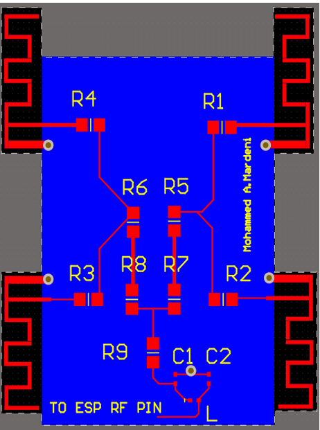

Image Classification using Convolutional neural networks
Using Convolutional neural networks to detect objects in images.
Design of PIFA four element array on Altium Designer

Using power deviders to link 4-element PIFA array using wilkinson bridge and resistive networks.
Implementing an Audio oscilator
Building low distortion audio oscilator of 2-modes - high (1k-17k)Hz and low (300-700)Hz frequecies using double through double pole switches. The oscilator uses RC shifts and distortion cancelling phase.
Design and Implementing EMG acquisition and classifier system
Design, simulate and build EMG acquisition sensor along side feature extraction and classifier models.
Heart desease diagnoses and detection using pyhsionet and AI
Using The WFDB to download and visulaize datasets from the phsionet database to train multiple classifiers
Design and implementing RISC-V microprocessor on FPGA design tools
Design RISC-V processor (single cycle, single cycle pipelined).
Reproduce for two resonator C-shaped antenna with a circular corner radiator
Reproduce the rsults of an two resonator C-shaped antenna with a circular corner radiator
weather server using esp32
use the esp32 to build wifi network login server and wearther enquiry.